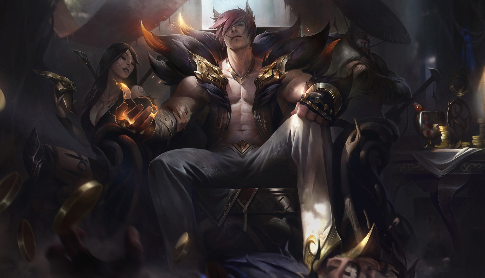

Sett El Jefe
Historia
Sett es un líder del inframundo criminal de Jonia, ascendido a la fama después de la guerra con Noxus. Su vida comenzó humildemente como un púgil en las calles de Jonia. Su padre, un vastaya jonia, abandonó a Sett y su madre para buscar mejores oportunidades en otros fosos de combate, lo que llevó a la expulsión de la tribu y a la obligación de vivir entre los humanos, que no los recibieron con amistad. Este rechazo y el odio de los humanos moldearon la personalidad de Sett, que se convirtió en alguien insensible y egoísta.
Sett se preocupa mucho por su madre y obtiene dinero de los fosos de combate para mantenerla a salvo y con un techo sobre su cabeza. Su personalidad es muy egoísta, y solo se preocupa por sus propios intereses. Sin embargo, su madre es muy importante para él, y él la adora.
El equipo de desarrollo de League of Legends quería crear un campeón que fuera atractivo y fácil de aprender, y Sett se convirtió en el resultado de esa idea. Fue diseñado para ser un luchador chulesco que pudiera ganar en combates desiguales, y su kit de habilidades fue diseñado para ser fácil de entender y usar.